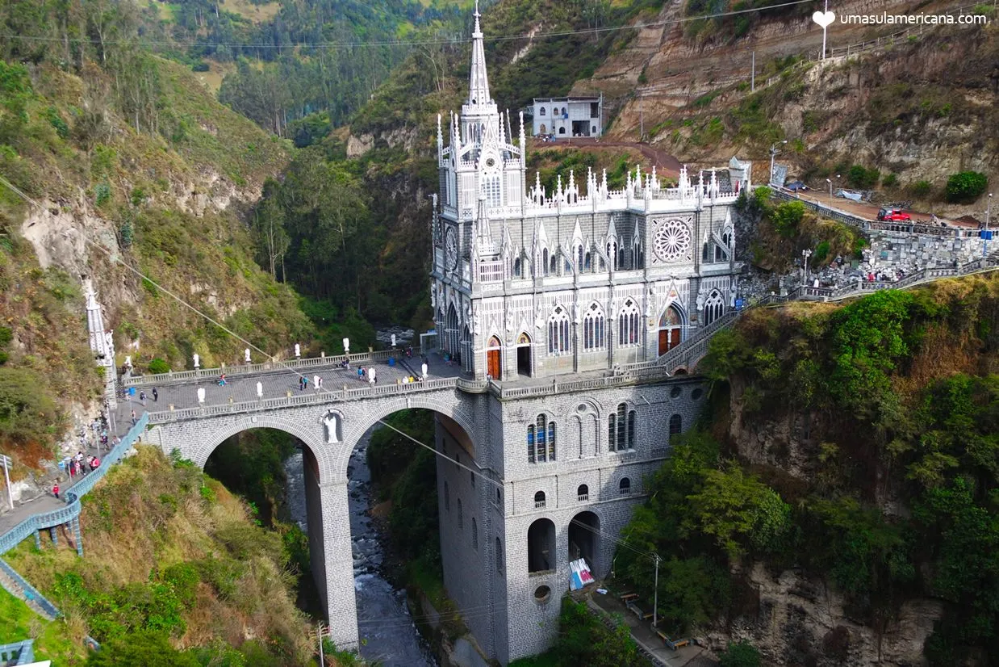

As Cataratas do Iguaçu é uma das principais belezas naturais na América do Sul, porque formam o maior conjunto de cachoeiras do mundo. Por isso o Parque das Cataratas do Iguaçu foi declarado como Patrimônio Mundial pela UNESCO na década de 80′ e eleito uma das Sete Maravilhas Naturais do Mundo em 2011.
O Santuário de Las Lajas é possivelmente a igreja mais bonita da Colômbia. Também é considerado por muitos como um dos templos mais bonitos do mundo. O jornal Telegraph nomeou o Santuário da Virgem de Las Lajas Colômbia como a igreja mais bonita do mundo em 2017. Pois é, a América do Sul não tá de brincadeira.

O Parque Nacional de Torres del Paine fica ao sul da Patagônia Chilena e é uma das paisagens mais impressionantes do sul país. A principal porta de entrada é a cidade de Puerto Natales.